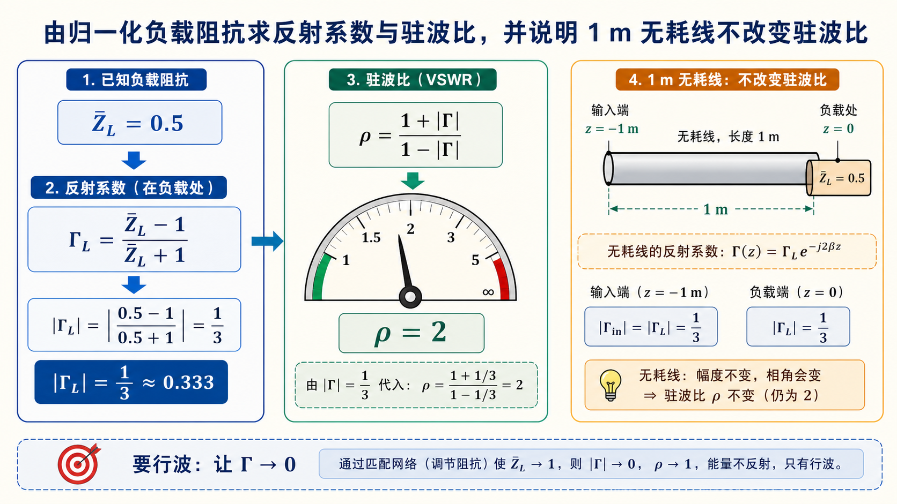

第三次作业（Lec13–Lec16）第 9 题：长 $1\,\mathrm{m}$，$\lambda_0=3.2\,\mathrm{cm}$，$\bar Z_L=0.5$（$\mathrm{TE}_{10}$ 归一化）§
对应知识点：05-波导段反射驻波与匹配
导航： 总目录 · 符号与导读 · Lec10–11 · Lec11～12 · Lec13–Lec16 主册 · 分题 1 · 2 · 3 · 4 · 5 · 6 · 7 · 8 · 9 · 10 · 11 · 12 · 上一题 第8题 · 下一题 第10题 · 附录
$\bar Z$ 相对 $Z_0$ 或 $Z_{\mathrm{TE}}$ 的定义以课程/导读为准，本题与原有数值约定一致。
一、前置知识§
1. 专有名词§
- 归一化阻抗 $\bar Z = Z / Z_0$；题给 $\bar Z_L=0.5$ 为负载相对参考阻抗。
- 反射系数（负载面）$\Gamma_L = (\bar Z_L - 1) / (\bar Z_L + 1)$（在同一归一化下）。
- 驻波比 $\rho = (1+|\Gamma|)/(1-|\Gamma|)$。
- 无耗均匀长线：$|\Gamma|$ 沿线为常数；输入与负载端同一 $|\Gamma|$、$\rho$（在同频、无耗、无多次反射的模型中）。
- 行波：$\Gamma=0$（匹配）；可经 $\lambda/4$ 变换、膜片/螺钉 或吸收负载实现。
- 工作自由空间波长 $\lambda_0$：无界真空（工程上空气常近似为自由空间）中，由工作频率决定的波长；题面「工作波长」在多数教材中即指 $\lambda_0$，不是在波导内另算一个「自由空间波长」。
- 导内波长 $\lambda_g$：波导内沿轴向的相波长，由 $\lambda_0$ 与模式截止波长 $\lambda_c$ 共同决定，与 $\lambda_0$ 不可混用。
2. 核心公式§
反射与驻波
- $\Gamma_L = (\bar Z_L-1)/(\bar Z_L+1)$。
- $\rho = (1+|\Gamma|)/(1-|\Gamma|)$。
工作自由空间波长（由频率或波数得到；本题题面已直接给出 $\lambda_0$ 时可直接采用）
- $\displaystyle \lambda_0 = \frac{c}{f}$，$c \approx 3\times 10^8\,\mathrm{m/s}$，$f$ 为工作频率。
- 若已知真空波数 $k_0=2\pi f/c$，则 $\lambda_0 = 2\pi/k_0$。
与导内波长的关系（空气填充矩形波导 $\mathrm{TE}_{10}$，$\lambda_{c,10}=2a$）
- $\displaystyle \lambda_g = \frac{\lambda_0}{\sqrt{1 - (\lambda_0/\lambda_c)^2}}$（$\lambda_0<\lambda_c$ 传播时）。
$\lambda_0=3.2\,\mathrm{cm}$ 与 BJ-100 单模关系见 第4、8题。数值核对：$f=c/\lambda_0 \approx 9.375\,\mathrm{GHz}$ 时 $\lambda_0=3.2\,\mathrm{cm}$。
二、分析思路§
- $\lambda_0$：题面已给 $3.2\,\mathrm{cm}$ 则直接用；若仅给 $f$，先用 $\lambda_0=c/f$ 得到工作自由空间波长，再与 $\lambda_c$ 比较判断模式。
- 确认在 $\lambda_0=32\,\mathrm{mm}$ 下，依波导尺寸仅 $\mathrm{TE}_{10}$ 可传（若题未给尺寸，则沿用前题 BJ-100/教材默认）。
- 用 $\bar Z_L$ 求 $\Gamma_L$ 与 $\rho$。
- 由无耗得输入端 $|\Gamma|,\rho$ 与负载端相同。线长 1 m 在本问不进入 $\rho$（仅影响相位，不改变 $|\Gamma|$）。
- 概括行波所需匹配措施。
三、标准解答§
工作自由空间波长：本题题面已给 $\lambda_0=3.2\,\mathrm{cm}$，以下均取 $\lambda_0=32\,\mathrm{mm}$。若题目只给频率 $f$，应先算 $\lambda_0=c/f$（$c\approx 3\times 10^8\,\mathrm{m/s}$）；例如 $f=9.375\,\mathrm{GHz}$ 时 $\lambda_0\approx 3.2\,\mathrm{cm}$，与题设一致。需要轴向相位、输入阻抗相角等时，波导内用 $\lambda_g=\lambda_0/\sqrt{1-(\lambda_0/\lambda_c)^2}$（$\mathrm{TE}_{10}$ 时 $\lambda_c=2a$），不要把 $\lambda_g$ 误当作题里的「工作自由空间波长」。
波型（$\lambda_0=32\,\mathrm{mm}$，与 BJ-100/课设一致时）：仅 $\mathrm{TE}_{10}$ 传播，见第4、8题同类判断。
$$ \Gamma_L = \frac{\bar Z_L-1}{\bar Z_L+1} = \frac{0.5-1}{0.5+1} = -\frac{1}{3}, \qquad |\Gamma_L|=\frac{1}{3}, $$
$$ \boxed{\rho = \frac{1+|\Gamma_L|}{1-|\Gamma_L|} = 2 }. $$
无耗长线上 $|\Gamma|$ 为常数，输入端
$$ \boxed{|\Gamma_{\mathrm{in}}|=\tfrac{1}{3}, \qquad \rho_{\mathrm{in}}=2 }. $$
行波措施（题常问）：在负载前实现共轭/阻抗匹配（如 $\lambda/4$ 阻抗变换、可调配电抗元件、吸收负载等），使等效 $\Gamma \to 0$。
注：线长 $1\,\mathrm{m}$ 不改变 $\rho$，但会改变输入反射系数的相角；若题目追问 $\bar Z_{\mathrm{in}}$，再按传输线关系引入 $\mathrm e^{-\mathrm j2\beta l}$ 等。
图示§

图：先由 $\Gamma_L=(\bar Z_L-1)/(\bar Z_L+1)$ 得反射大小，再由 $\rho=(1+|\Gamma|)/(1-|\Gamma|)$ 得驻波比。无耗线上 $|\Gamma|$ 沿线不变，题中的 $1\,\mathrm m$ 线长只改变相角，不改变 $\rho$。
四、与主册/他题衔接§
- $\bar Z=0.5$ 为纯实数，负载为阻性；与 第8题 的导纳/反射为同一微波网络的两种叙述。